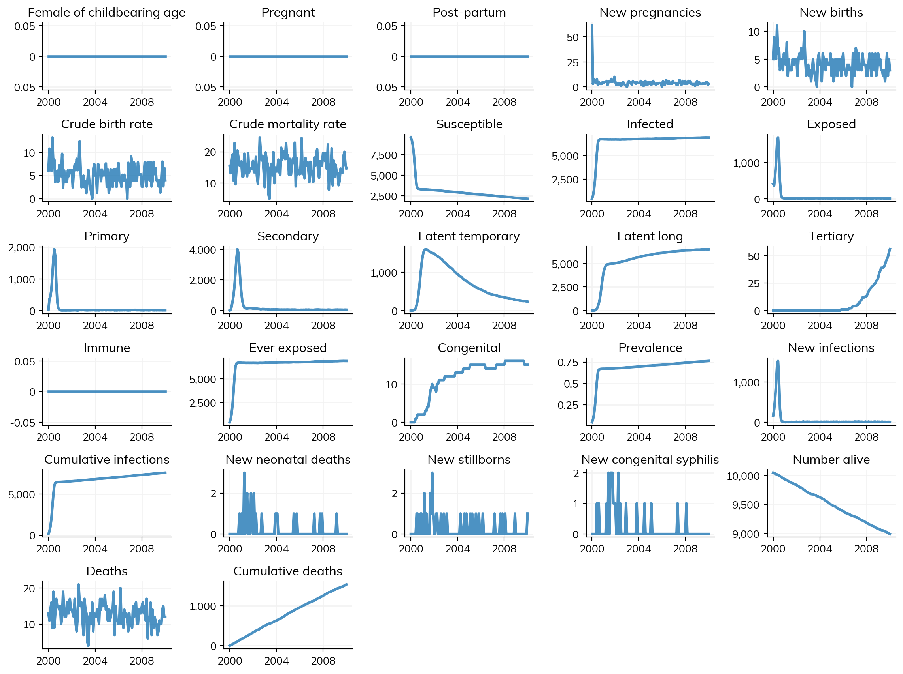
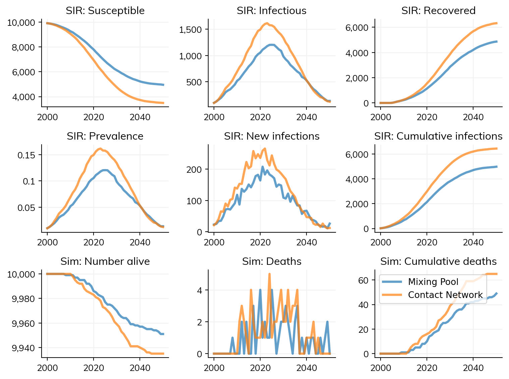

import numpy as np
import sciris as sc
import starsim as ss
import starsim_examples as sse
import matplotlib.pyplot as plt
# Make random network
random = ss.RandomNet()T5 - Networks
An interactive version of this notebook is available on Google Colab or Binder.
Many infectious diseases transmit when people come into contact with one another. In the basic SIR example that we covered in the first two tutorials, we used a ‘random’ contact network, which creates random pairings of people. Generally speaking, the structure of network that you use depends on what disease you’re modeling.
Starsim contains two different approaches to disease transmission.
Contact network: Disease transmits on individual person-to-person relationships. These are networks in the sense that each agent (person) can be viewed as a node and each contact is an edge. Networks are undirected in the sense that an edge will allow transmission in both directions, however you can make transmission stronger one way (p1–>p2) than the other (p2–>p1). The framework includes several pre-built contact network algorithms, each of which manages a list of edges that can change on each simulation step. In addition to the ‘random’ network, the framework include algorithms representing basic sexual networks for modeling sexually transmitted infections (STIs) and a ‘maternal’ network for modeling mother-to-child transmission.
Mixing pools: Simulate well-mixed transmission from one group of agents to another. Each mixing pool simulates directed transmission from a group of source agents to a group of destination agents. Instead of simulating individual edges like in a contact network, mixing pools first compute the total “contagion” that is shed by the source group. This total contagion value is normalized by the number of agents in the source group to arrive at a value that represents a typical infectious source agent. Then, each destination agent is exposed to this typical (average) infectious agent, likely resulting in new infections in the destination group. Multiple mixing pools can be run simultaneously to simulate heterogeneous transmission between various source and destination groups. Mixing pools could be used with age contact matrices like those developed by Prem et al.
Note that contact networks and mixing pools can be used together in a single simulation.
In this tutorial, we’ll demonstrate a couple of the built-in contact networks, and give an overview of how you might create your own for your own disease modeling work. We’ll also demonstrate how to use mixing pools.
Overview of Starsim’s contact network structure
Starsim’s networks are stored in the networks.py file. At the top of this file you’ll see the Network class, which provides the template for all the other networks. At a high level, all you need to know is that network stores various parameters that determine how pairs of people form and dissolve, and a collection of all the edges that exist at a given point in time. Let’s look at a simple example of the random network:
The network we just made stores two very important things: the list of contacts (found in random.edges) and the parameters (random.pars).
If we just make a network on its own like this, it’s not very interesting. Like all components of Starsim, it needs to be initialized within a sim before the database of contacts gets populated:
net = ss.RandomNet()
sir = ss.SIR()
sim = ss.Sim(n_agents=50, diseases=sir, networks=net) # Decreasing n_agents so we can plot the network below
sim.init()Initializing sim with 50 agentsSim(n=50; 2000—2050; networks=randomnet; diseases=sir)We can easily take a look at the list of edges between agents. All networks are stored in sim.networks, and individual networks can be found at their class name after conversion to lower case. So for this example, sim.networks.randomnet.edges has all the information about which agents (referenced by their UID) are paired with which other agents as well as a per-edge transmission multiplier called beta and a per-edge duration, dur.
sim.networks.randomnetrandomnet(n_edges=250; pars=[n_contacts, dur, beta]; states=[participant])Networks provide some basic functionality, for example to identify contacts. Additionally, the edge list can be quickly converted to a pandas dataframe or networkx graph for further analysis and manipulation:
net = sim.networks.randomnet
# Use the "find_contacts" function to find all contacts of agent with uid 0
contacts_of_agent_0 = net.find_contacts([0])
print('The following agents were identified as contacts of agent 0:', contacts_of_agent_0)
# Convert to a pandas DataFrame and manually find all edges involving agent with uid 0
df = net.to_df()
uid0_edges = df.loc[(df['p1']==0) | (df['p2']==0)]
print('\nEdges involving UID 0 extracted from the edge list data frame:')
display(uid0_edges)
# Plot the network using networkx
net.plot()The following agents were identified as contacts of agent 0: [ 7 9 13 18 24 33 39 40 44 46]
Edges involving UID 0 extracted from the edge list data frame:| p1 | p2 | beta | dur | |
|---|---|---|---|---|
| 0 | 0 | 24 | 1.0 | 0.0 |
| 1 | 0 | 7 | 1.0 | 0.0 |
| 2 | 0 | 44 | 1.0 | 0.0 |
| 3 | 0 | 13 | 1.0 | 0.0 |
| 4 | 0 | 18 | 1.0 | 0.0 |
| 45 | 9 | 0 | 1.0 | 0.0 |
| 165 | 33 | 0 | 1.0 | 0.0 |
| 196 | 39 | 0 | 1.0 | 0.0 |
| 204 | 40 | 0 | 1.0 | 0.0 |
| 234 | 46 | 0 | 1.0 | 0.0 |
Figure(672x480)Sexual networks
Starsim contains a few basic sexual networks, including an mf network for modeling heterosexual partnerships and an msm network for men having sex with men. Modeling STIs is a straightforward extension of the SIR example we looked at previously. Here’s an example modeling syphilis:
# Create the disease
syph = sse.Syphilis(
beta = {'mf': [0.25, 0.15]}, # See notes below
)
# Create a heterosexual network
mf = ss.MFNet(
duration=1/24, # Using very short relationships so that we get more transmission
acts=80, # Distribution of the number of coital acts/year
)
pars = dict(start=2000, dur=20, dt=1/12)
sim = ss.Sim(pars=pars, diseases=syph, networks=mf)The main difference here is that we’ve added the line syph.pars['beta'] = {'mf': [0.25, 0.15]}. Because STIs are generally more transmissible from males to females than vice versa, we can specify beta as a list, and we can also allow it to vary between networks. For instance, if we also had an MSM network here, we could set
syph.pars.update(beta = {'mf': [0.25, 0.15], 'msm': [0.4, 0.4]})The sexual network itself is structurally similar to the random network that we looked at previously, and can be customized by changing the pars dictionary that’s used to construct it.
Maternal networks
Maternal networks are useful for capturing mother-to-child transmission. If you want to use them, you also need to model pregnancy. As new agents are born via pregnancy, edges are automatically added between mother and prenatal child in the maternal network. Here’s an example showing how you would do this for syphilis:
syph = sse.Syphilis(
beta = {'mf': [0.25, 0.15], 'maternal': [0.99, 0]}
)
# Make demographic modules
pregnancy = ss.Pregnancy(fertility_rate=20)
death = ss.Deaths(death_rate=15)
# Make maternal network
maternal = ss.MaternalNet()
# Make sim
sim = ss.Sim(pars=pars, diseases=syph, networks=[mf, maternal], demographics=[pregnancy, death], dur=10)
sim.run().plot(show_module=False)Initializing sim with 10000 agents
Running 2000.01.01 ( 0/121) (0.00 s) ———————————————————— 1%
Running 2000.11.01 (10/121) (0.28 s) •——————————————————— 9%
Running 2001.09.01 (20/121) (0.36 s) •••————————————————— 17%
Running 2002.07.02 (30/121) (0.44 s) •••••——————————————— 26%
Running 2003.05.03 (40/121) (0.53 s) ••••••—————————————— 34%
Running 2004.03.02 (50/121) (0.61 s) ••••••••———————————— 42%
Running 2005.01.01 (60/121) (0.69 s) ••••••••••—————————— 50%
Running 2005.11.01 (70/121) (0.78 s) •••••••••••————————— 59%
Running 2006.09.01 (80/121) (0.86 s) •••••••••••••——————— 67%
Running 2007.07.02 (90/121) (0.94 s) •••••••••••••••————— 75%
Running 2008.05.02 (100/121) (1.02 s) ••••••••••••••••———— 83%
Running 2009.03.03 (110/121) (1.10 s) ••••••••••••••••••—— 92%
Running 2010.01.01 (120/121) (1.19 s) •••••••••••••••••••• 100%
Figure(1152x864)
Making your own contact network
If you want to make your own network, a good place to start is by inheriting from one of the templates in networks.py. For example, if you wanted to make an mf network that has more age structure, you could do something like this:
class age_mf(ss.MFNet):
def add_pairs(self, people, ti=None):
# Custom code to select pairs based on age
return This network would operate exactly like the existing mf network, but you could control how new pairs were added.
Introduction to mixing pools
While contact networks model individual relationships, mixing pools model group-level transmission. This is useful for: - Large populations where individual contacts are impractical - Age-structured mixing (like school, work, household contacts) - When you have contact matrices from epidemiological studies
Here’s a simple comparison:
# Simple mixing pool example
mp = ss.MixingPool(beta=1.0, n_contacts=ss.poisson(lam=3))
sir_mp = ss.SIR()
sim_mp = ss.Sim(diseases=sir_mp, networks=mp, verbose=0, label='Mixing Pool')
# Equivalent contact network
net = ss.RandomNet(n_contacts=ss.poisson(lam=3))
sir_net = ss.SIR(beta=ss.peryear(0.1))
sim_net = ss.Sim(diseases=sir_net, networks=net, verbose=0, label='Contact Network')
msim = ss.MultiSim([sim_mp, sim_net]).run()
msim.plot()Figure(768x576)
Both approaches model similar transmission patterns, but mixing pools work with groups rather than individual contacts.
What you’ve learned
Congratulations! You’ve now learned how to: - Use basic contact networks for disease transmission - Model disease-specific networks (sexual, maternal) - Create custom networks with your own connection rules - Understand the difference between contact networks and mixing pools
For more advanced mixing pool techniques (age-structured mixing, contact matrices, multi-group models), see the Networks implementation guide.
Exercises
- Multi-network STI model: Adapt the syphilis example to include both MF and MSM transmission
- Custom network parameters: Modify the AgeMFNet to have different age bins and mixing probabilities
- Network comparison: Compare random vs age-structured networks - how do they affect epidemic dynamics?